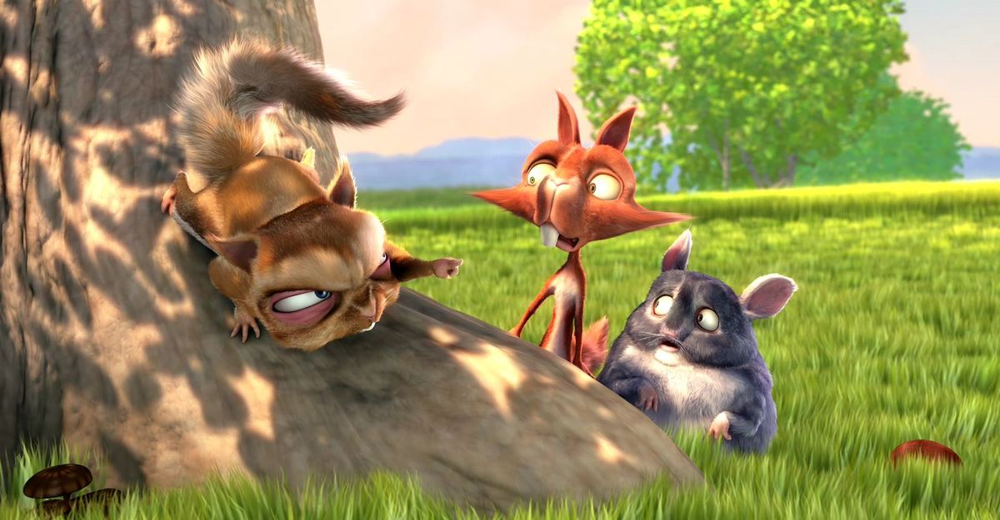

Field notes from public lands
Where we walked this month

Up to Pitamakan LakeGlacier National Park · 6 min read

Film night: Big Buck BunnyOpen movie · 10:35

A quiet lake near BremnerAlaska · 4 min read

Through the Bechler meadowsYellowstone · 3 min read

Little River Falls after the rainAlabama · 3 min read

A first night under the Milky WayNight skies · 4 min read